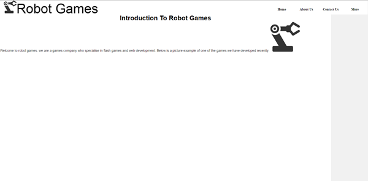
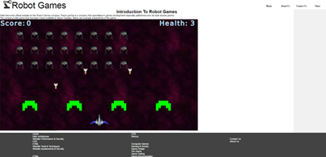

Security
Hackers
Hackers are a big problem on the internet because there are lots of hackers on the internet. Hackers will access your computer via security holes these can be found in many places such as people not having a firewall installed on your computer this could potentially mean that a hacker can gain access to your computer with little effort. Viruses – Viruses are malicious pieces of software often written by criminals these piece of software often hide in other pieces of legitimate software in order to infiltrate a user’s computer. These viruses can be programmed to do almost anything from sending your passwords to the criminal in question to just shutting down your computer every time it boots.
Unwanted Junk
On your computer you usually browse the web and most people also download odds and ends occasionally so over time these files build up, when you browse the web websites often store small amounts of information on your computer in the form of cookies these files also mount up over time. If these files are not cleaned out, then they will start to slow your computer down therefore when you try and use the web it will be very slow because your computer will be clogged with temporary files. Identity Theft – Almost everybody has an online presence now these things include having an account on Facebook twitter or other social media these can become hacked and a criminal might take over your online life and lock you out this may allow the hacker to steal your identity this may include them accessing your bank accounts. These are ways of protecting your computer
Anti-Virus
An antivirus is a piece of utility software which is used in order to prevent viruses from gaining access to your computer and can also be used to remove viruses that may have slipped through the protection or that was already on the computer before the anti-virus program was installed. This software is essential for any computer that is internet connected and even for computers that aren’t it is recommended this is because viruses gain access to your computer through the internet and can also hide on usb drives and gain access when plugged into computer.
Spyware
Spyware is a utility software that is used to prevent and remove a specific type of virus that is designed to steal passwords or watch your browsing history it can do this by scanning for the virus signature that is left behind by the virus. Firewalls – a firewall is a piece of software that is run on almost every computer system and it is used to restrict access in and out over the network. The firewalls primary job is to close off the ports that are open to the network and open and close them effectively as legitimate software requests access to the network and requested data attempts to get in. a good example is windows defender firewall.
Adding good strong passwords
adding strong passwords is good practice for helping to secure your computer this is because when a hacker is trying to gain access to your accounts or your computer they will usually go straight to guessing the password this is because this is often the easiest method of gaining access to people’s accounts. A weak password will be very easy to guess by a hacker and therefore will make keeping your accounts secure very difficult. A google example of a password is a password which includes a mixture of upper case and lower case charicters aswell as numbers, not having any sequential numbers in the password also helps make it more difficult to guess.
Feedback
After meeting with the tutor I showed him the main home page for the website and one of the pieces of feedback that I got was that the website looked a little blank and colourless however I believe that the website will make the text much easier to read and the website will be easier to navigate if the website is clean looking and is simple to understand.
Another piece of feedback was that the home page looked a little bit too empty therefore in order to make the website fit the needs of the client I will add some screenshots of the game to the website and add some more text to explain what the website is for and what its purpose is. I will also ass a welcome message to the front page to make sure that when people visit the sight they know what the website is for.
Before Alterations:

The changes that I have made are that I have changed the welcome message in order to give more information about the company and what they do as well as introducing their latest game. I have also added a screenshots of Space Odyssey.
After Alterations:

D3

After looking back on my origional design for the website it has not changed much and it looks mostly the same as the origional plan however the side bar that was origionally on the left that was going to be used for putting set scroll points in was moved to the right and is currently unused. The purpose of this website was to show off the game that i had made as well as to show off all the assignments i have done over the course of the project and i think the website oes this task ppretty well. all the work i have done this year is in thos website and can all be access through either the top interactive menu or by using the accessibility menu that the bottom which should work on basically any browser because it only relys on basic html and css while th emenu at the top of the page requires javascript and jquery to run and thereofre may have issues on some devices.